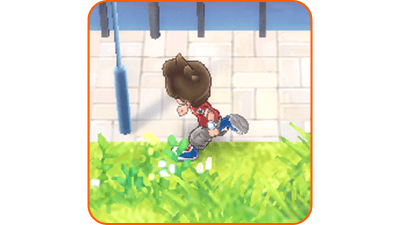
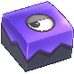
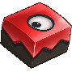

Acciones
Desplazarse
Desliza el stick izquierdo en la dirección en la que quieras que se mueva tu personaje. Deslízalo suavemente para caminar.
Correr
Mueve el stick izquierdo mientras mantienes pulsado Ⓑ para correr. En algunos minijuegos, como la pesadilla súbita, aparecerá un indicador de resistencia al correr. Al correr, se consumirá tu energía. Si llega a cero, no podrás correr hasta que el indicador de energía se vuelva a llenar.

Desplazarse en bicicleta
Una vez que tengas una bicicleta, pulsa arriba en la cruceta la para subirte a ella. (Hay ciertas zonas del mapa en las que no puedes montar en bicicleta.)
Examinar / Hablar
Pulsa Ⓐ en zonas donde veas ciertos iconos comoopara examinarlas o hablar con personajes, Yo-kai y animales.
Abrir cofres del tesoro
Acércate a un cofre del tesoro y pulsa Ⓐ para hacerte con el objeto que contenga. Hay varios tipos de cofres.
 |
Algunos volverán a aparecer tras un cierto periodo de tiempo. |
|---|---|
| Otros solo se pueden abrir una vez. | |
 |
Estos solo aparecen durante la pesadilla súbita. |
Capturar a los Yo-delincuentes
A medida que avances en la historia, podrás capturar Yo-delincuentes que se encuentren por la ciudad. Cuando captures a uno 3 veces, recibirás una contraseña. Introduce la contraseña obtenida en la segunda ventanilla de la Oficina de correos Borreguero para recibir un objeto. Ten en cuenta que las búsquedas tienen un límite de tiempo de unos días. Puedes preguntarle al Inspector Peluso para saber cuánto tiempo queda.